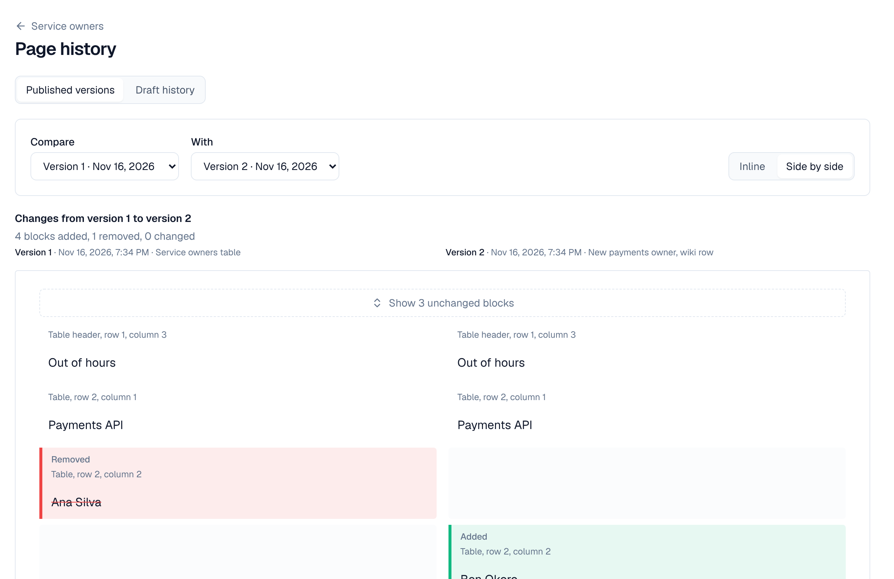
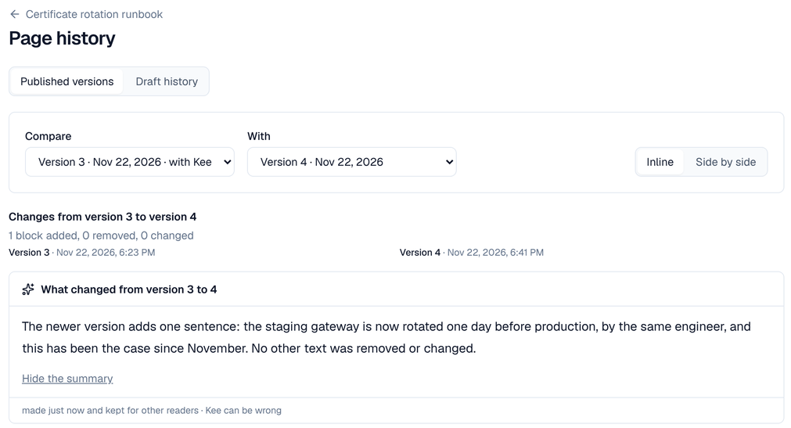
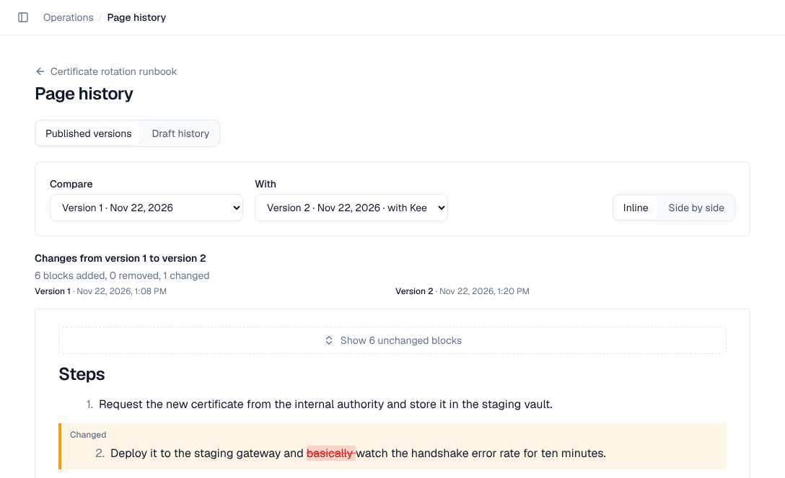

1. Overview
Each time a page is published, the Wiki keeps that version for good: its title and content, who published it and when, the note about what changed, and whether it was minor. Versions are numbered 1, 2, 3 and so on. Readers always see the latest one.
2. Versions in the editor
Versions in Page details lists the newest versions, with Older versions for the rest. Each one has:
| Button | What it does |
|---|---|
| Open | Shows that version as readers saw it. |
| Compare | Compares it with the version before. |
| Restore | Replaces the draft with that version, for everyone editing the page, and opens the publish dialog. Readers see it once you publish. |
Restoring changes only the draft: you can still edit before you publish, or undo it. A version published from a restore says which version it restores, as long as the draft wasn't changed in between.
- Open the page and select Edit.
- Open Page details, the side panel of the editor, if it is hidden.
- Under Versions, find the version (Older versions shows the rest) and select Restore.
- Check the draft, then select Publish. Readers see the restored text once it is published.
3. Compare two versions
Page history under the title of a published page (once it has more than one version), or Page history and comparison in the editor, opens the page's history. Readers of the space can open it for published pages; people who edit pages can for every page.

- Open the page and choose ⋯ → Page history.
- Pick the two versions in Compare and With. The newest against the one before is picked for you.
- Switch between Inline and Side by side, and select Show … unchanged blocks to see what stayed the same.
- Pick the two versions in Compare and With: by default the newest against the one before.
- Inline shows the changes in one column, Side by side in two (on wider screens).
- Added and removed words are marked inside each block, and a change the text doesn't show (an image's caption, a table cell, a box's settings) is named under it.
- Unchanged parts are folded; select Show … unchanged blocks to see them.
People who edit the page can switch Show to Draft history to compare snapshots of the draft the same way. See Drafts & publishing.
4. What changed, in words
While Kee is on, comparing two published versions offers What changed, in words: Kee describes the changes between them in a few plain sentences, above the comparison.

- Open the page and choose ⋯ → Page history.
- Pick the two versions in Compare and With.
- Select What changed, in words. The description appears as it is written; Hide the summary folds it away.
- A description is made once for each pair of versions and language, then reused by everyone who compares the same two: the footer says reused without a new request or made just now and kept for other readers. Making a new one counts as one request against your daily limit.
- When the versions differ in many places, Kee describes the first of them and says so; the comparison below always shows everything.
- Two versions with the same content say Nothing to describe.
- Not offered in a space where Kee is off, or when an administrator turned Change summaries off.
- Kee can be wrong: the marked comparison is what really changed.
5. Versions written with Kee
When a result from Kee was put on a page, the next published version is marked with Kee: in the Compare and With pickers of the page history and in the editor's versions. The mark says only that the version holds text applied from Kee, not who used it or which words.

The same goes for a change Kee proposed and you applied in Ask Kee. A version published from a draft that an outside AI app wrote into is marked With an AI app instead, and names the app. These marks show while Kee or outside AI apps are on; the audit log says how every version came about either way.
A space's admins can also tell readers: with Tell readers when a page holds text written with Kee on in the space's Settings → Kee, such pages show "Parts of this page were written with Kee and checked by its authors." above the text. See Kee in a space.
6. Deleted pages
Deleting a page moves it, with the pages under it, to the space's trash, where people who can edit pages can restore it with all its versions until it is removed for good. See Pages & the page tree.